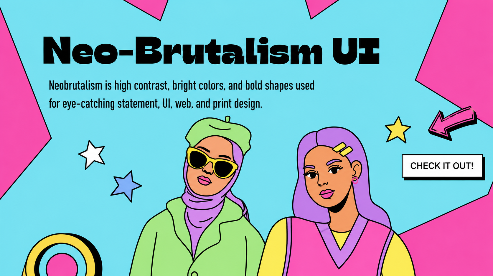
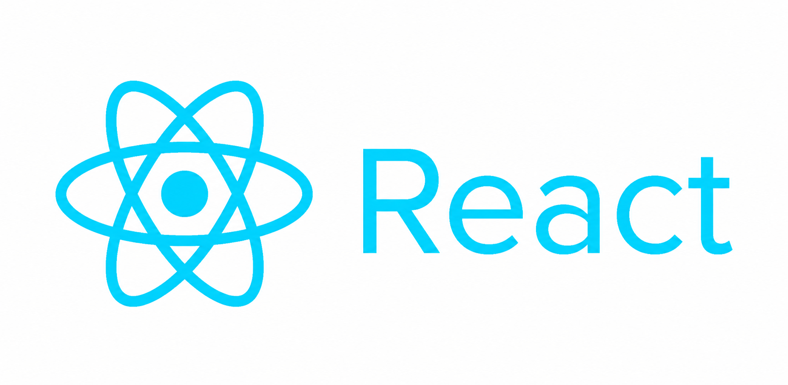

Tulisan santai seputar dunia programming, web development, dan teknologi terbaru.

Tren desain web terus berkembang. Mengapa neobrutalism dengan garis tegas dan warna kontras tetap relevan hingga saat ini? Mari kita bedah alasannya.
Baca ArtikelSaat aplikasi mulai ramai pengguna, query yang lambat menjadi musuh utama. Berikut adalah 5 teknik indexing yang sering dilupakan developer pemula.
Baca Artikel
RSC (React Server Components) mengubah cara kita berpikir tentang state dan fetching data. Apakah ini merupakan akhir dari dominasi Redux?
Baca Artikel